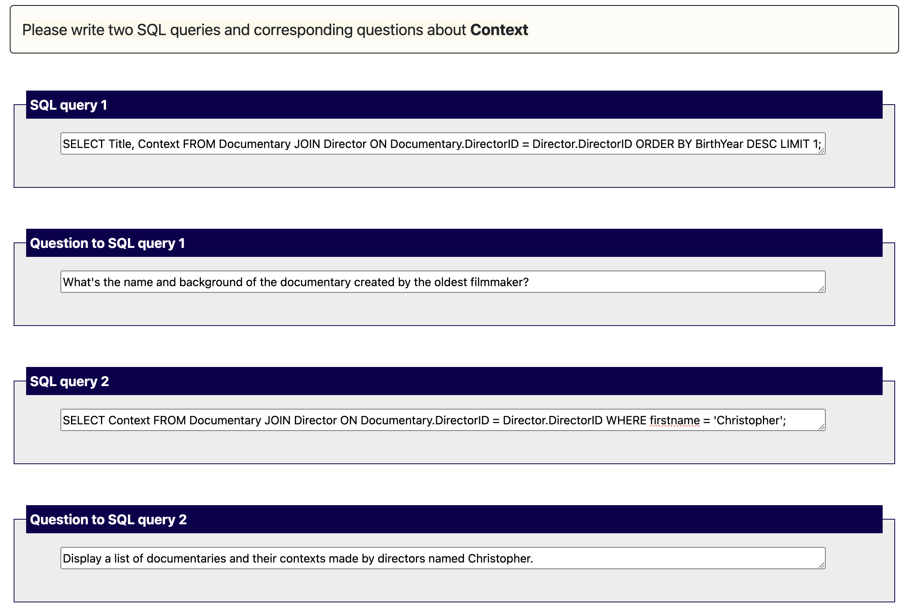

Documentary
| DocumentaryID | Title | Context | DirectorID |
|---|
| | | (→ Director.DirectorID) |
|---|
| 1 | Apollo 11 | Space Race Era | 5 |
| 2 | Blue Planet II | Anthropocene | 4 |
| 3 | Planet Earth | Holocene | 3 |
| 4 | Wild Africa | Holocene | 2 |
| 5 | The Hunt for Bin Laden | War on Terror Era | 1 |
Director
| DirectorID | FirstName | LastName | BirthYear | DeathYear |
|---|
| 1 | Christopher | Nolan | 1970 | None |
| 2 | Frank | Darabont | 1959 | None |
| 3 | Quentin | Tarantino | 1963 | None |
| 4 | Christopher | McQuarrie | 1967 | None |
| 5 | Robert | Zemeckis | 1945 | None |
Example of a completed annotation for highlighted column Context:

Requirements
- SQL queries must have a highlighted column or a main column in a highlighted table as one of the output columns.
- SQL queries should not contain WHERE clauses with a highlighted column or table.
- If your database consists of multiple related tables, you should use the JOIN operator in your SQL query whenever possible.
- The question should reflect your SQL query, but be simple and clear.
- You can also write a question in the form of an instruction or command (as you would ask an assistant, e.g. "Show me/Provide/...")